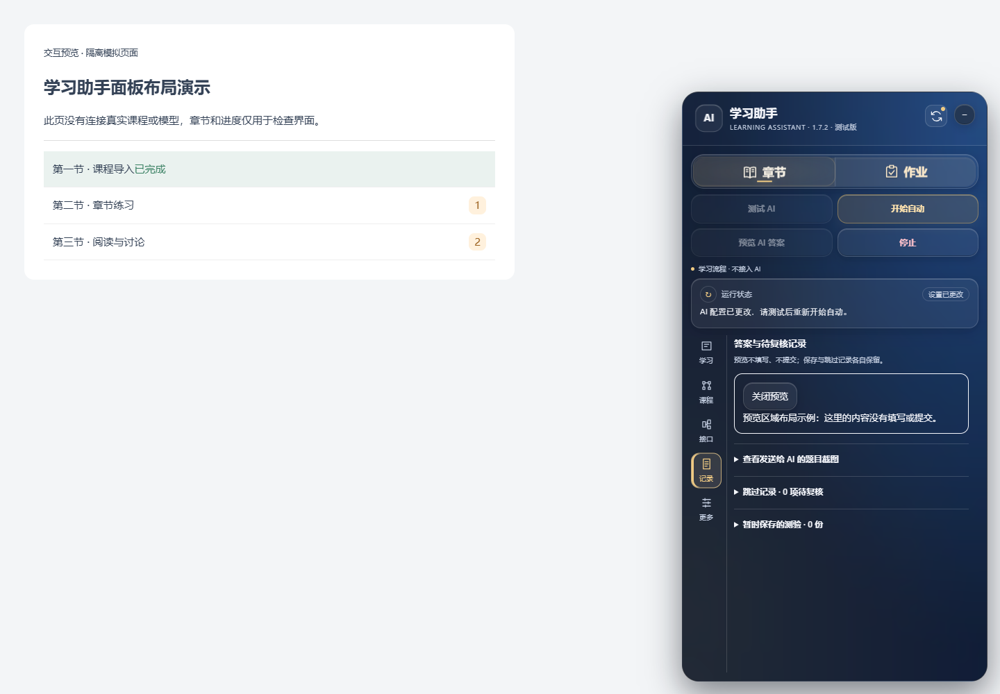
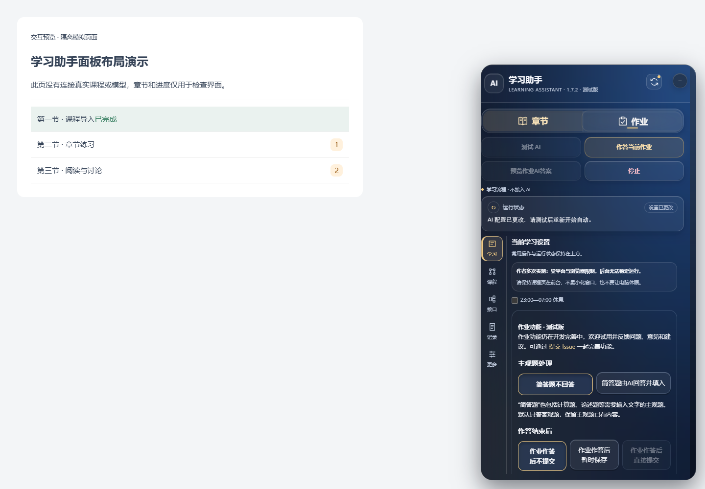

先看答案，不动页面填写
点预览 AI 答案，答案和解析会出现在“记录”区。预览不填写、不保存、不提交；预览期间自动运行会停止。想取消等待，点“停止”或关闭预览。
预览也可能调用模型并产生费用。它适合先检查答案，再决定如何处理，不能当成已完成测验。

章节测验
当前支持已适配的单选、多选、判断、填空和简答结构。英文题按题目要求的语言回答，中文解析另放；翻译题按目标语言作答。
有图片、图表、公式图片或读不清的特殊字体时，需要可用的图片接口。文字题通常只发送文字。没有图片接口时，不能把文字模型当成已经看过题图。
章节自动提交中，选择题若被模型标为低置信度或无法读清，脚本可能随机选择并标注“随机”；填空和简答不会据此随机编造文本。需要先核对时，请使用答案预览。
同章课前、课后等多份测验会分别处理。一份出现成绩，不代表整章完成；页面结构不支持或缺少有效答案时，需要查看记录并人工核对。
整份测验里有简答题
在“学习”区选择简答题策略：直接提交、暂时保存、直接跳过。首次使用默认暂时保存，已经保存过的明确选择会保留。
这个选择作用于整份含简答题的测验，包括其中的客观题。暂存只在核对本次保存成功提示后记为保存，不表示已提交或得分。
暂存成功的测验可在“暂时保存的测验”列表返回原章节和具体测验；返回不会自行续填或提交。直接跳过不会调用 AI 或填写该份测验。
独立作业要手动打开
- 从课程“作业”入口打开一份作业，并保持前台。
- 在面板顶部选择“作业”。
- 检查主观题开关和结束后的处理方式，再点“作答当前作业”。
默认只处理客观题，保留主观题原有内容；作答后不额外点保存或提交。需要 AI 回答计算、简答、论述等已适配主观题时，单独开启，并明确选择暂存或直接提交。

“复查 AI 作答”重新调用接口，逐题与当前填写比较，只列差异，不替换原答。比较一致不保证正确。脚本只处理当前作业，不自动进入下一份。
识别到多空富文本填空时，按页面空号逐项填写。已有人工作答会保留。空号、编辑器归属或保存值无法核对时，先人工检查。
考试辅助（测试版）
考试功能原为俗称「水课」的课程练习和获准使用 AI 的测验开发。请遵守校方及任课教师的考试规则。违反规则使用时，因被检测、成绩处理或纪律处分产生的后果由使用者自行承担，作者不对此负责。
- 在平台打开试卷，先选择答题和交卷方式，默认由你填写和交卷。
- 在逐题页点「开始考试辅助」，脚本会通过平台的「整卷预览」打开整卷。若未能接续，请在整卷预览页手动开始。需要导入知识文件时，先在整卷页导入再开始。
- 逐题核对建议和理由。每题右上角是 AI 对该题建议答案的自评确定度。它只能辅助复查，不能代表正确率或得分。低于 80% 的题会标为待复查。
- 首次待复查时，AI 会补充逐项或简答理由。点「去复查」定位题目，选择答案或填写文本，再点「确认作答」。原生保存已确认后会清除标记。若运行状态提示某题未确认，请回到原生试卷核对对应选项。
AI 直接作答时，脚本等待学习通确认保存后再继续。填写结束会重新核对整卷，保存未确认的题列为待复查，并暂停自动交卷。
中断后，在同一答卷再点「开始考试辅助」可复用已保存的结果。使用本地 Codex 或 CodeBuddy 时，请同步更新桥接服务。
「只生成答案」可在整卷预览页使用，保留页面现有作答。选择自动交卷前，请核对最早交卷时间和所有题目。提交以学习通回执为准。
章节讨论
讨论属于章节任务，没有单独的讨论模式入口。在“学习”区设置简短、详细或自定义长度；老师明确要求的字数优先，没有明确要求时，简短和详细模式按题意组织，最多 800 字。
脚本读取老师原帖及对应图片，不把同学回复、头像当成题目。原帖图片需要图片接口。已有人工草稿或真实附件会保护。
发表后会回课程核对任务点。发表结果不明、或刷新后仍未确认完成时，不反复发表同一条，保留待复核。停止、预览、夜休和验证码会取消讨论操作。
提交后看平台结果
待批阅表示老师还没给出最终结果。脚本保留已提交内容，不擅自刷新、改答案或重交，再处理可以接续的内容。
平台给了可匹配的正确答案、并允许重做时，脚本可以按反馈重新处理；没有参考答案时，会按历史得分复核，避免重复提交同一组失败答案。次数仍由平台决定。
选词拖拽、连线、排序、作图、部分共享文章子题和正式考试交卷，不在通用支持范围内。遇到不支持的页面，请先停止并提供脱敏反馈，不需要为了采集问题重复提交。
任务点完成、提交成功和满分是不同结果。最后请在平台检查实际成绩。